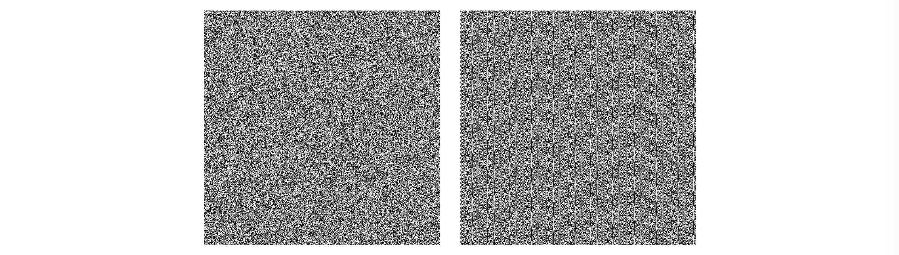
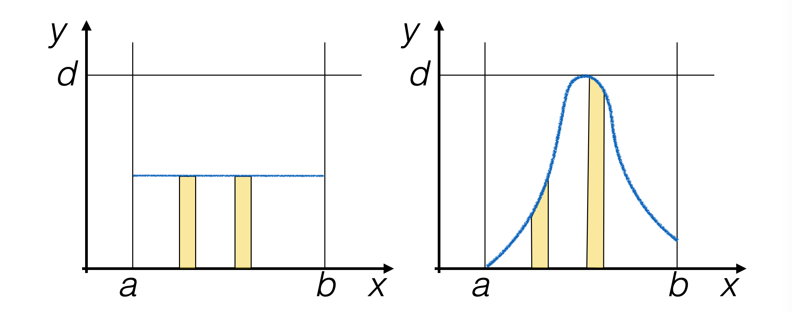
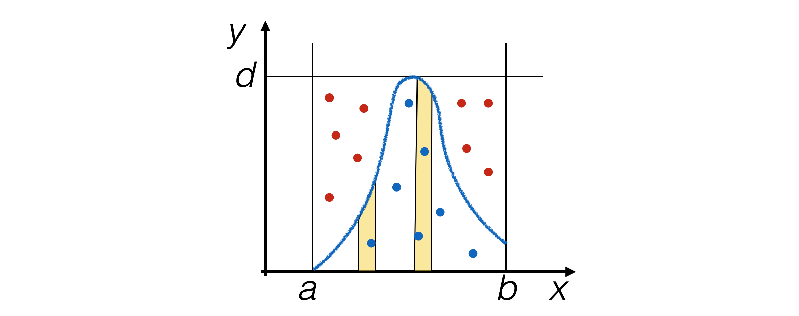
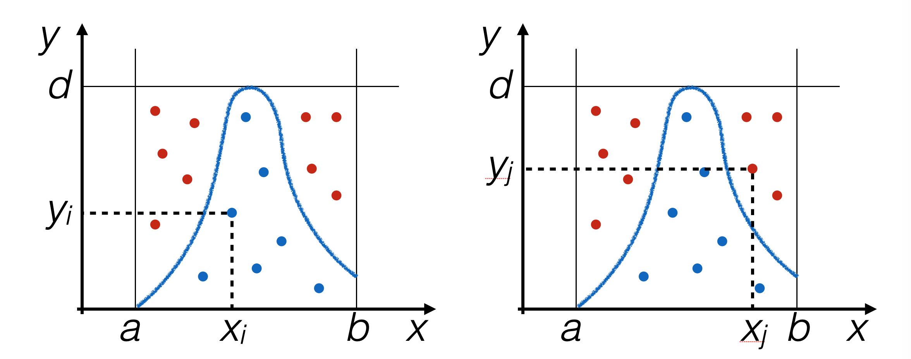
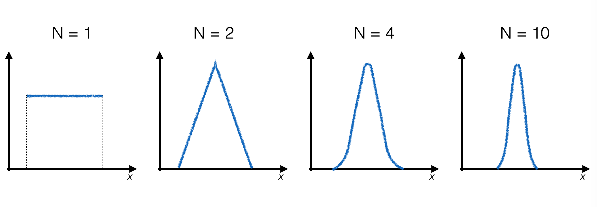

5. Generation of Pseudo-Random Numbers#
5.1. Pseudo-Random Numbers#
When performing any measurements, the comparison between collected data and a model of nature is carried out
To falsify the model, or
To determine the value (and associated uncertainty) of one of its parameters
It is therefore crucial to be able to calculate model predictions
Often the model is not known in an alytical form and alternative computational methods are used to obtain predictions for comparison with measurements
Many calculation techniques are based on generating random numbers
To reproduce the random nature of measurements
Or to uniformly populate phase spaces defined within sophisticated boundaries
5.1.1. Random Sequences#
A random process or stochastic process produces a sequence of numbers randomly distributed according to a fixed probability distribution
The probability that a particular number appears at any point in the sequence does not depend on the numbers that precede or follow it
For example:
Arrival time of cosmic rays on a muon detector
The result of a coin toss or dice roll
Since they depend on the timing of natural processes, these are typically sequences that take a long time to construct, which becomes a limiting factor in calculations
5.1.2. Pseudo-Random Sequences#
Programs and libraries exist, generally called pseudo-random number generators, that produce sequences of numbers that appear random
The sequence of numbers in these sequences is deterministic, and the functions used for generation are designed to mimic the behavior of random sequences
The first number in a sequence (or sequence) of pseudo-random numbers is called the seed, because that number is known and, along with the generation algorithm, the entire sequence can be reproduced
Clearly, different seeds will start different sequences of pseudo-random numbers
5.1.3. Linear Congruential Generator#
An example of a formula to calculate the next element of a pseudo-random sequence given any number is as follows:
\[ x_{n+1} = (A \cdot x_n + C) \mod M \]With:
\[\begin{split} M &> 0 \\ 0 <~&A < M \\ 0 <~&x_0 < M \\ M &\sim 10^{32} \end{split}\]The first element of the sequence, with index zero, is the seed
This algorithm generates by construction numbers between 0 and M
5.1.4. Issues with Pseudo-Random Number Generators#
The functional dependence between two consecutive pseudo-random numbers should not be visible
If a repeated number reappears in a pseudo-random sequence, the sequence starts repeating from that point: this is the periodicity of the generator
The period must be much greater than the quantity of generated pseudo-random numbers and should not depend on the seed choice
Typically, random number generators follow a uniform distribution: non-uniformity of the distribution is another common defect that one wants to avoid
An example of the result of a poorly performing pseudo-random number generator can be found here 
5.1.5. A Random Number Generator in Python#
The
randomlibrary contains a pseudo-random number generatorrand():import random randlistint = [] for i in range (5): # Return the next random floating point number in the range 0.0 <= X < 1.0 randlist.append (random.random ()) print (i, randlist[-1])
The code above produces the following output:
0 0.9773950056543294 1 0.6500404225224424 2 0.042647579579998096 3 0.8110944794319123 4 0.6975819042310242
5.1.6. Characteristics of random#
It is a generator of pseudo-random integers uniformly distributed between
0and1The default
seedof therandomfunction is set based on the current time as known by the operating systemTo have the generator starting from a given
seed, so that the same sequence is produced ad every run of the script, the following instruction has to be used:random.seed (float (sys.argv[2]))
It’s in fact important to be able to reproduce the same sequence of pseudo-random numbers for testing purposes.
Unless there are important reasons to do otherwise, the seed is initialized only once during the execution of a program.
5.1.7. Generating integer random-numbers#
The
randomlibrary may be used to generate integer numbers as well:randlistint = [] for i in range (5): # Return the next random floating point number in the range 0.0 <= X < 1.0 randlistint.append (random.randint (0, 100)) print (i, randlistint[-1])
The
randintfunction generates numbers within a range specified in its arguments
5.2. Generating Pseudo-Random Numbers with Uniform Distribution#
The
randomlibrary may be used to produce sequences of pseudo-random numbers following different distributions using appropriate algorithms.In general, the probability density functions of pseudo-random numbers generated with a computer will always have a limited range, due to intrinsic limitations of computers.
The uniform distribution of random numbers is a special case, as it is defined on a limited set by construction (otherwise its integral would be divergent).
5.2.1. Uniform Distribution of Pseudo-Random Rational Numbers#
The goal is to produce random numbers within the interval
min, max, using the resources at hand, i.e.,random.Uniform distribution between
0and1:random.random ()
Scaling between
0andmax-min:(max - min) * random.random ()
Translation by
min:def rand_range (xMin, xMax) : ''' generazione di un numero pseudo-casuale distribuito fra xMin ed xMax ''' return xMin + random.random () * (xMax - xMin)
5.3. Other Probability Distributions: Try-and-Catch#
In the case of the uniform probability density function (PDF), the probability that pseudo-random events are generated in a given interval does not depend on the position of the interval.
For non-uniform PDFs, this is not true.

5.3.1. The Try-and-Catch (TAC) Algorithm#
Generate pseudo-random events in a way proportional to the area under the PDF.

Populate the plane with pairs of pseudo-random numbers
x,y, each generated uniformly withrand_range(), and usexonly ify < f(x).

5.3.2. Implementation of the Try-and-Catch Algorithm#
To repeat generation until the condition
y < f(x)is satisfied, a loop is used:def rand_TAC (f, xMin, xMax, yMax) : ''' generazione di un numero pseudo-casuale con il metodo try and catch ''' x = rand_range (xMin, xMax) y = rand_range (0, yMax) while (y > f (x)) : x = rand_range (xMin, xMax) y = rand_range (0, yMax) return x
The function
rand_TACneeds more arguments thanrand_range:an upper limit for the vertical axis:
yMaxthe functional form to be used as the PDF: as you can see, a function can also be passed as an argument to another function simply by name.
Important
Advantages |
|---|
Knowing the functional form of the PDF, the algorithm works.
It’s not necessary for the PDF to be known analytically, it’s sufficient that it can be written as a
pythonfunction.Easily generalizable to N dimensions.
Disadvantages |
|---|
One must be sure to know the maximum (
yMax) of the function.It has low efficiency:
To obtain a random number, at least two are generated.
Often many more, because many points on the plane are discarded.
5.4. Other Probability Distributions: Inverse Function#
Let x be a random variable with continuous PDF f(x).
Let F(x) be the PDF cumulative distribution function (CDF).
If F(x) is strictly increasing, then the variable y = F(x) has a uniform distribution. (This is proved using the chain rule when changing variables in a PDF.)
Generating pseudo-random events with uniform distribution in y is therefore equivalent to generating pseudo-random events along x with distribution f(x).
5.4.1. The Inverse Function Algorithm#
Calculate analytically F(x) and its inverse function F -1(y).

Generate pseudo-random numbers yi with uniform distribution between
0and1along the y axis.For each generated event, calculate xi = F -1(yi) and use that value as the generated random number.
Where f(x) is higher, F(x) is steeper, so the number of pseudo-random numbers generated in the two intervals Δy1 and Δy2 is proportional to the area under the curve f(x) above the two intervals with width Δx, respectively, which is the goal to achieve.
Important
Advantages |
|---|
It’s efficient in generating pseudo-random numbers, as each number is used.
Disadvantages |
|---|
One must know the analytical form of f(x) and F(x) and be able to invert the cumulative function to obtain F -1(y).
Calculating a function adds time to event generation.
5.5. Gaussian Probability Distributions: Central Limit Theorem#
The central limit theorem can be used to generate probability distributions with Gaussian shape.
The central limit theorem
Let N be given independent and identically distributed random variables xi with probability distribution f(x) having finite mean μ and variance σ2. Then, for large N, the variable y = ⟨xi⟩ is distributed as a Gaussian with mean μ and variance σ2.
5.5.1. Implementation of the Algorithm#
In this case as well, we start with a known pseudo-random number generator - the uniform distribution.
To produce a single pseudo-random number distributed according to a Gaussian, it’s necessary to generate N pseudo-random numbers according to the uniform distribution and calculate their average.
As N increases, the final distribution gets closer and closer to the Gaussian limit:

5.5.2. Advantages and Disadvantages of the Gaussian Distribution Algorithm#
Important
Advantages |
|---|
It’s based on a well-known theorem and allows for (within the numerical approximations of a computer) verification that the theorem works.
It’s not necessary to analytically describe the functional form of the Gaussian.
Disadvantages |
|---|
To achieve good precision, many uniform pseudo-random numbers need to be generated to obtain one distributed according to a Gaussian distribution.